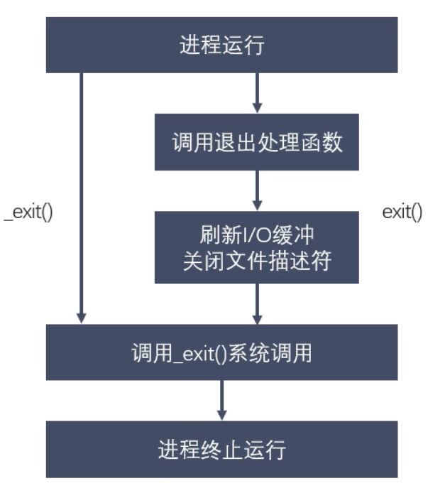
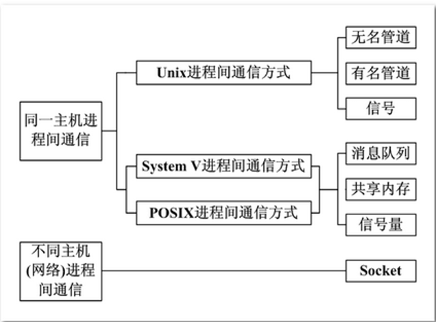

Linux多进程开发 进程概述 这里使用了之前学习黑马时所记的学习笔记；
程序与进程 程序是静态的，进程是动态的。
单道、多道程序设计 单道：所有进程一个一个排队。
并行和并发 并行：同一时间有多条指令在多个处理器上同时执行。
并发：同一时刻只能有一条指令执行，但是多个进程指令被快速的轮换执行，导致宏观上有多个进程同时执行的效果。
举例说明：
并行：两个队列同时使用两台打印机
并发：两个队列交替使用一台打印机
MMU MMU是Memory Management Unit的缩写。中文名字是内存管理单元。是中央处理器CPU用来管理虚拟存储器、物理存储器的控制线路，同时也负责虚拟地址映射为物理地址。以及提供硬件机制的内存访问权限，用于多用户多进程操作系统。
映射物理内存，并不是全映射。只有用到的内存才会在物理内存上映射出来。内核空间只有一个。用户空间不同进程是不同的。
进程控制块PCB 每个进程在内核中都有一个PCB来维护进程相关的信息。Linux系统内核的进程控制块是task_struct结构体。重点掌握以下字段：
进程ID ：pid_t类型
进程状态 ：初始化、就绪、运行、挂起、停止
进程切换时需要保存和恢复的寄存器
描述虚拟地址空间的信息
当前工作目录
umask掩码，每个进程是不同的
文件描述符表
和信号相关的信息
用户ID和组ID
进程状态转换 进程状态反应进程执行过程中的变化。
三态模型：就绪、运行、阻塞
五态模型：新建、就绪、运行、阻塞、终止
ps aux / ajx
a：显示终端上的所有进程，包括其他用户的进程
u：显示进程的详细信息
x：显示没有控制终端的进程
j：列出与作业控制相关的信息
进程由进程号来标识，其类型为pid_t （整型），进程号的范围是0-32767。进程号总是唯一的，但是可以重用。
任何进程除了init进程外都是由另一个进程所创建，该进程称为被创建进程的父进程，对应进程号为父进程号（ppid）
进程组是一组进程的集合。有进程组号（pgid）默认情况下，当前进程号会当作进程组号。
1 2 3 pid_t getpdi () pid_t getppid () pid_t getpgid ()
进程创建 1 2 3 4 5 6 7 8 9 10 11 12 13 14 15 16 17 18 19 #include <sys/types.h> #include <unistd.h> pid_t fork () if 和else 外的代码父进程和子进程都会执行。父子进程之间的关系： 区别： 1 、fork函数的返回值不同 父进程中：>0 返回的是子进程的ID 子进程中：=0 2 、PCB中的一些数据 当前的进程id、pid 当前的进程的父进程id、ppid 信号集 共同点： 某些状态下：子进程刚刚被创建出来，还没有执行任何写操作的时候 - 用户区中的数据 - 文件描述符表 父子进程变量是不是共享的？ 读时共享，写时复制
父子进程的虚拟地址空间情况 1 2 3 4 父子进程的内核空间中pid是不同的。 初始时父子进程的内容是相同的，对变量进行的修改是互不影响的。 写时拷贝。fork，资源的复制是在需要写入时才会进行的。
GDB多进程调试 1 2 3 4 5 6 7 8 9 set follow-fork-mode child # 设置跟踪子进程show follow-fork-mode set detach-on-fork [on | off] 默认为on，表示调试当前进程的时候，其他的进程继续运行，如果为off，调试当前进程的时候，其他进程被gdb挂起 info inferiors # 查看调试的进程 inferior id # 切换当前调试的进程 detach inferiors id # 使进程脱离gdb的调试 注意：一定要在fork函数调用之前设置才有效
EXEC函数族 1 2 exec函数族的作用就是根据指定的文件名找到对应的可执行文件，并将它执行，所以当前进程的信息会被替换成可执行文件中的信息。这样的话，原有进程就没法继续往下执行了，因此通常在fork函数之后执行exec函数族。 执行成功之后不会返回，因为进程的代码段、数据段以及堆栈等信息都被新的内容所替代，只有当调用失败时才会返回-1，然后从原程序的调用点接着往下执行。
1 2 3 4 5 6 7 8 9 10 11 12 13 14 15 16 #include <unistd.h> int execl (const char *path, const char * arg, ...) 参数： - path：需要指定的执行文件的路径或者名称 a.out 推荐使用绝对路径 - arg：执行可执行文件所需要的参数列表 第一个参数一般没有什么作用，都是执行程序的名称，从第二个参数开始，就是参数列表，以null结尾 int execlp (const char *file, const char *arg, ...) 参数： - file：可执行文件名，会到环境变量（PATH）中去寻找可执行文件 int execve (const char *pathname, char *const argv[], char *const envp[]) l —— list ——命令行参数列表 p —— path —— 搜索file时使用path变量 v —— vector —— 使用命令行参数数组 e —— environment —— 使用环境变量数组，不使用进程原有的环境变量，设置新加载程序运行的环境变量。 只有execve是系统调用。其他五个函数都是调用execve。
进程退出、孤儿进程、僵尸进程

1 2 3 4 5 6 7 #include <stdlib.h> void exit (int status) #include <unistd.h> void _exit(int status);exit 会自动刷新缓冲区并关闭文件描述符
1 2 3 父进程运行结束，但子进程还在运行，这样的进程称为孤儿进程。 每当出现孤儿进程时，内核就把孤儿进程父进程设置为init，而init进程会循环的wait它的已经退出的子进程，用于回收子进程的资源。 因此孤儿进程并不会有什么危害。
1 2 3 4 5 6 7 8 9 10 11 12 13 14 15 16 17 18 19 20 21 22 pid_t pid;pid = fork(); if (pid == 0 ) { sleep(9 ); printf ("I am son, I am going to die\n" ); } else if (pid > 0 ) { while (1 ) { printf ("I am parent\n" ); sleep(1 ); } } else { perror("fork()" ); }
wait和waitpid 1 2 3 4 5 6 7 8 9 10 11 12 13 14 15 16 #include <sys/types.h> #include <sys/wait.h> pid_t wait (int *status)
1 2 3 4 5 6 7 8 9 10 11 12 13 14 15 16 17 18 19 20 21 22 23 24 #include <sys/types.h> #include <sys/wait.h> pid_t waitpid (pid_t pid, int *status, int options)
进程通信

匿名管道 1 2 3 4 5 6 7 8 9 10 11 12 13 14 15 16 17 18 19 20 21
有名管道 1 2 3 4 5 6 7 8 9 10 11 12 #include <sys/types.h> #include <sys/stat.h> int mkfifo (const char *pathname, mode_t mode)
内存映射 1 2 3 4 5 6 7 8 9 10 11 12 13 14 15 16 17 18 19 20 21 22 23 24 25 26 27 28 29 30 31 32 #include <sys/mman.h> void *mmap (void *addr, size_t length, int prot, int flags, int fd, off_t offset) #include <sys/mman.h> int munmap (void *addr, size_t length)
信号